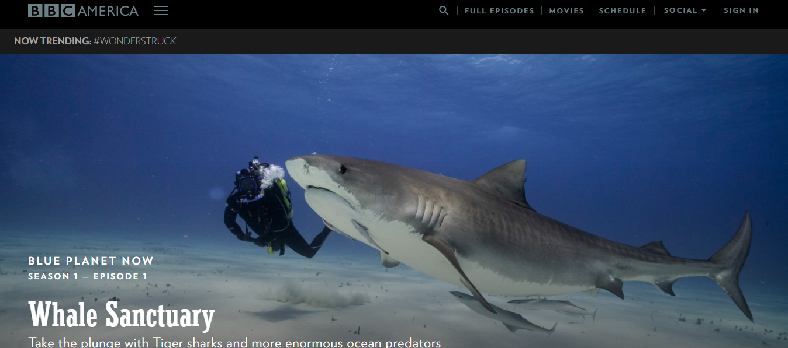
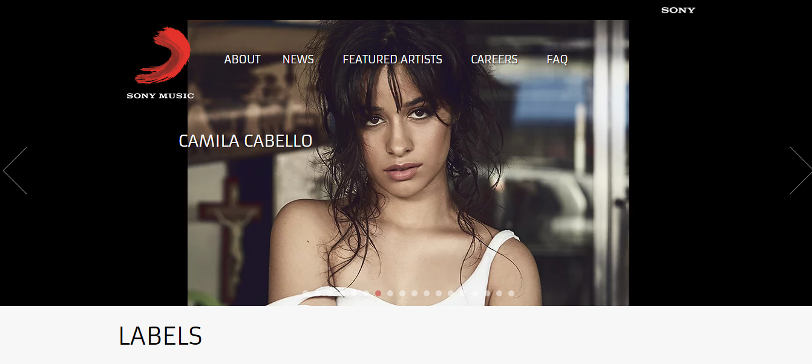

What Is WordPress? Explained for Beginners.
By Silke on November 09, 2019 | Category | What is WordPress | Content Management System | 16 Comments | Views (74)
What Is WordPress? Explained for Beginners.
As a web designer or a beginner, You’ve probably heard a lot about WordPress lately and might ask yourself or query to know “What is WordPress?” “What is it Purpose?” "Who uses Wordpress ?" "How it works?" Surely you're at the right place and Through this lesson, we will learn a few things in details about Wordpress, What it is used for? and its amazing features.
WordPress is a factory that makes webpages" it is a content management system that stores content and enables a user to create and publish webpages, requiring nothing beyond a domain and a hosting service. WordPress is a system that lets you create pages or posts without having to learn all that complicated HTML code. WordPress has a web template system using a template processor. Its architecture is a front controller, routing all requests for non-static URIs to a single PHP file which parses the URI and identifies the target page. This allows support for more human-readable permalinks.
Acknowledging the number of total active websites estimated at over 172 million according to a survey published by Netcraft, around 75,000,000 websites are using WordPress right now — with around half of those sites (37,500,000) being hosted on the WordPress.com a freemium website and best blog hosting service on a shared hosting installation. Now you know what WordPress is, Let's have a look at some of the need to know details and Unique features of Wordpress - the world’s most popular site-building software.
.png)
What is WordPress used for?
it is the best and among the majority widely used website creation tools around the world and also an equally powerful Content Management System (CMS). Listed below are a few Uses of WordPress. WordPress is an excellent website platform for a variety of websites. From blogging to e-commerce to business and portfolio websites, WordPress is a versatile CMS. Here are just a few examples of the types of websites you can build with WordPress:
- business
- E-commerce
- Music Sites
- Photography Sites
- News
- Blog
- Membership
Here are the key details about WordPress:
- it’s open-source (Free)
- it’s the ultimate solution for website building
- it’s extra versatile – can run any type of website
- it’s fast, optimized, and secure
- it’s SEO-ready – makes promotion easier
Who Uses WordPress?
WordPress is used by individuals, big businesses, and everyone in between! Lots of other well-known entities use WordPress as well. Here are some of our favourite examples:
bbcamerica
News.Microsoft

New York Times

Beyonce

Sony Music
Is WordPress easy to learn?
Yes, of course, WordPress is very easy to learn. WordPress is as easy to use as a word processor, so learning how to use (link here) it well is simply a matter of getting a handle on how to use it's the point-and-click interface. And these WordPress fundamentals won't take you long to learn either.
10 Benefits of Using WordPress to Power Your Company's Website
- Ease of Use.
- Manage Your Website from Any Computer.
- No HTML Editing or FTP Software Required.
- Search Engines Love WordPress Sites.
- You Have Control of Your Site.
- The Design of Your Website is 100% Customizable.
- A Blog is Built-in and Ready to Go.
- Extend the Functionality of Your Site with Plugins.
Features of Wordpress
WordPress also features integrated link management; a search engine–friendly, clean permalink structure; the ability to assign multiple categories to posts; and support for tagging of posts. Automatic filters are also included, providing standardized formatting and styling of text in posts (for example, converting regular quotes to smart quotes). WordPress also supports the Trackback and Pingback standards for displaying links to other sites that have themselves linked to a post or an article. WordPress posts can be edited in HTML, using the visual editor, or using one of several plugins that allow for a variety of customized editing features.
Mobile applications For Wordpress
Phone apps for WordPress exist for WebOS, Android, iOS (iPhone, iPod Touch, iPad), Windows Phone, and BlackBerry. These applications, designed by Automattic, have options such as adding new blog posts and pages, commenting, moderating comments, replying to comments in addition to the ability to view the stats.
How do I get started using WordPress?
Now you’re certainly asking, “how do I get it?”
WordPress is free. Yep, that’s right – it’s 100% free.
WordPress can be downloaded for self-hosted installations
from WordPress.org or it can also be used as a hosted service
via WordPress.com.
So, what are you waiting for? Go get WordPress today to
start
creating your awesome website.
Learn How To Install WordPress for Free
Now that you know more about WordPress, why not Learn More On How to Install Wordpress For Free and have it running.
In Conclusion
With tools for everyone from personal bloggers to large corporations, this powerful content management system (cms) is user-friendly even for beginners and aims to make it possible for anyone to create an online presence in minutes. The WordPress platform is flexible, scalable and always free to use.
Comments